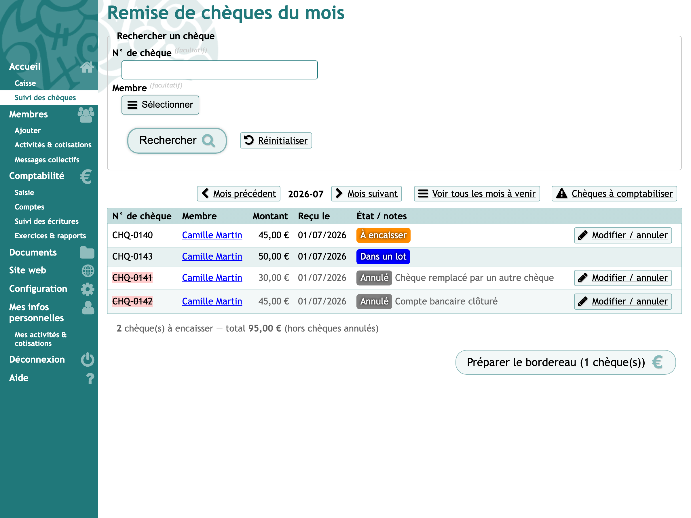
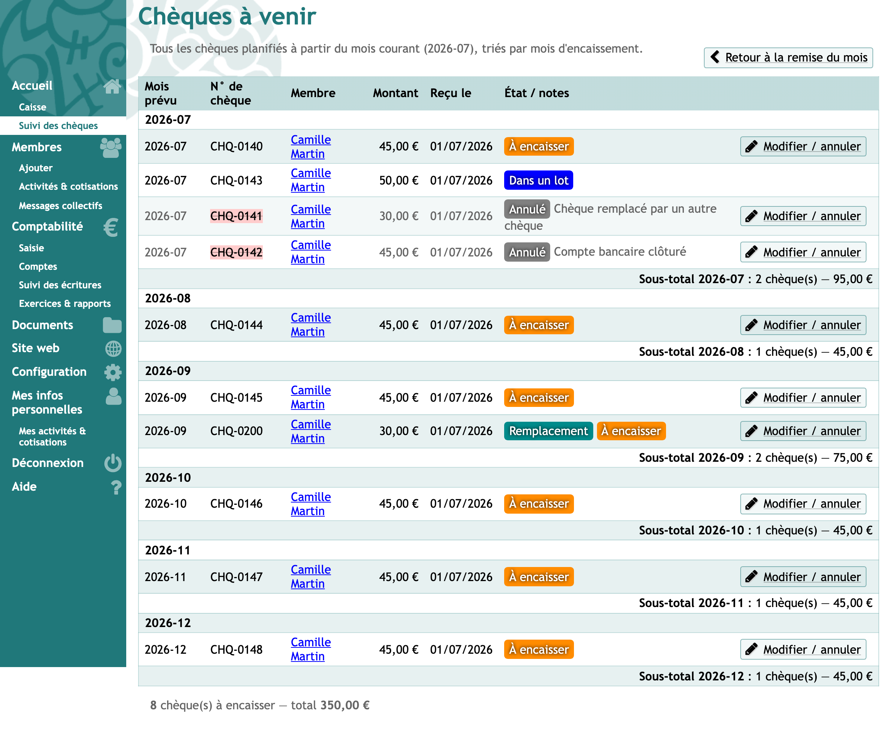
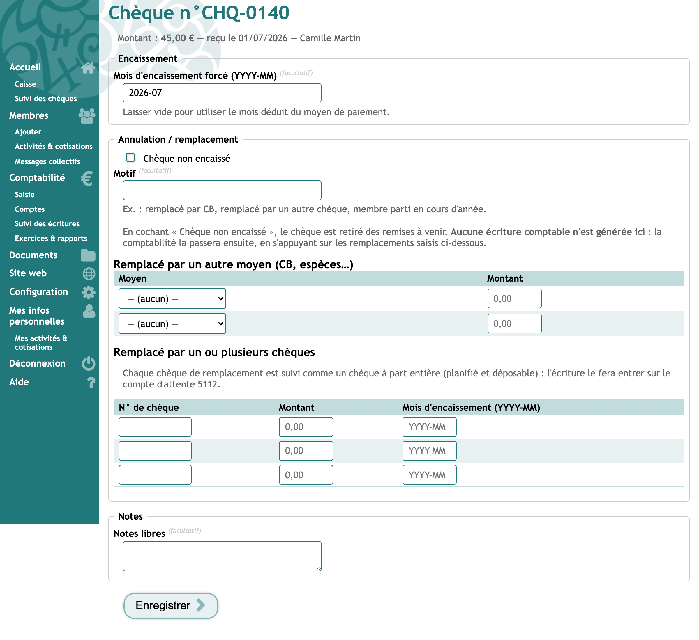
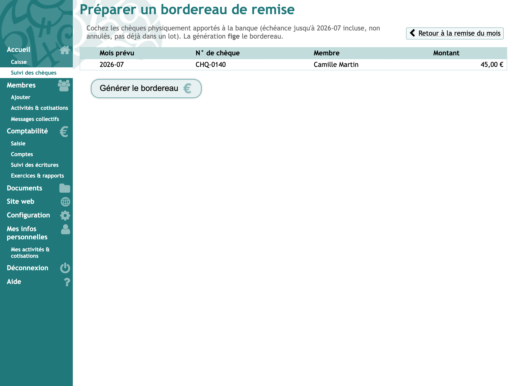
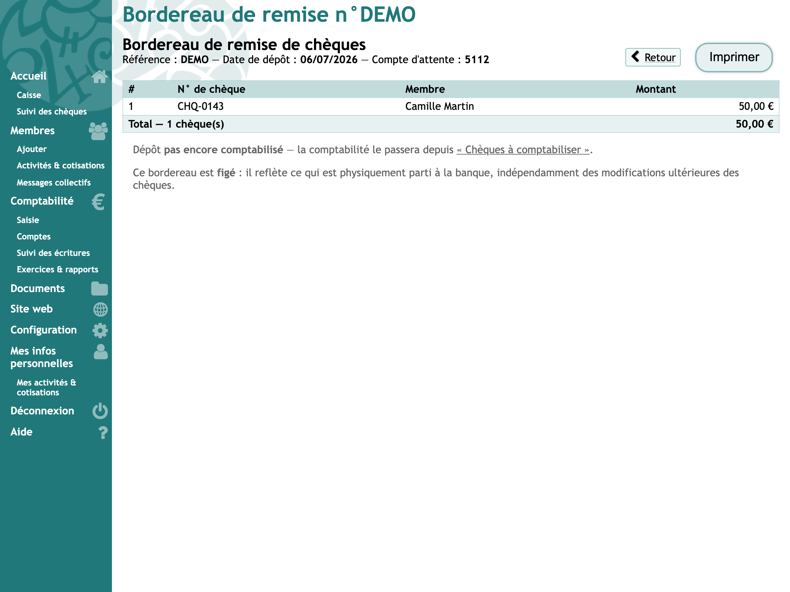
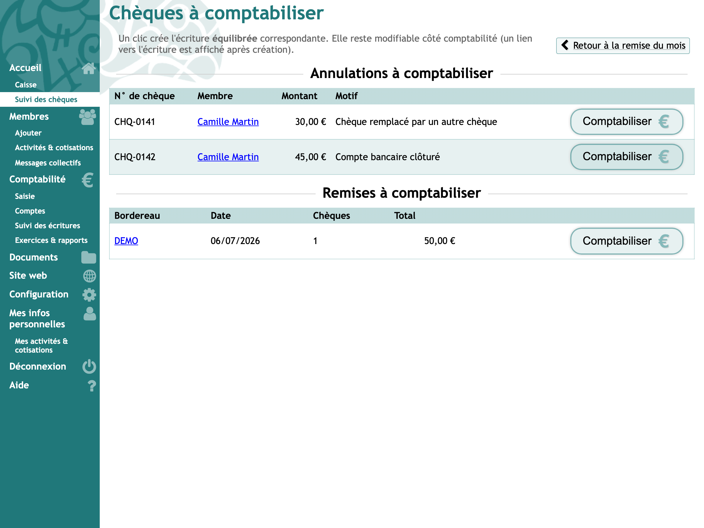
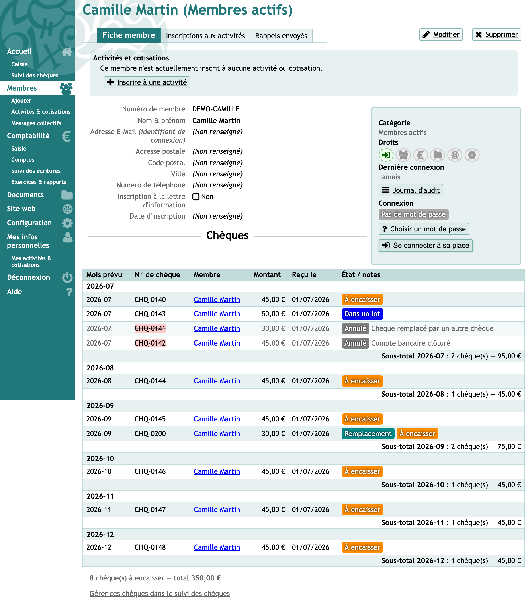
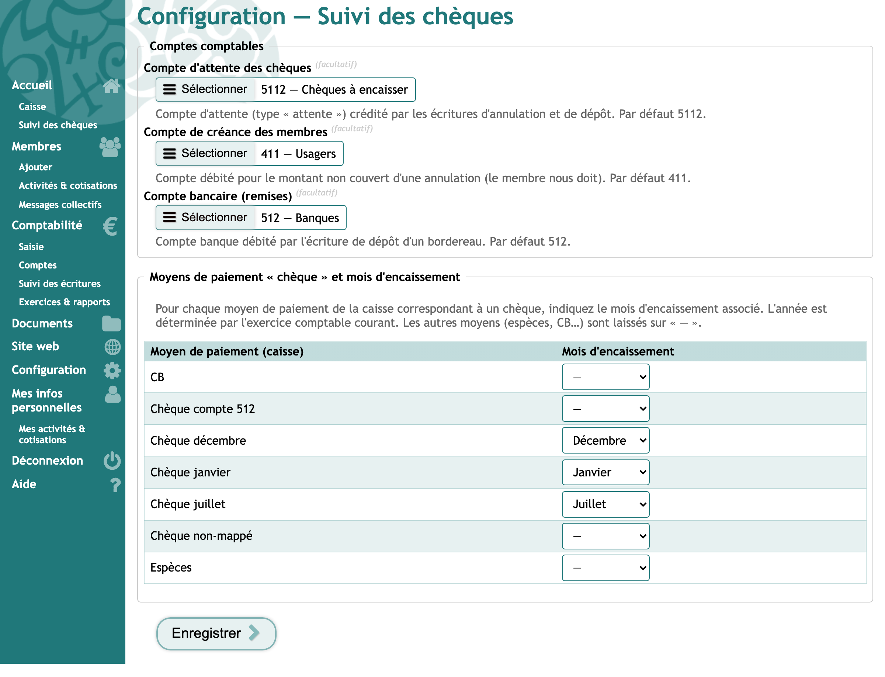

Guide d'utilisation — recevoir, planifier, déposer et comptabiliser les chèques de la caisse.
Ce module suit chaque chèque encaissé en caisse : quand il sera déposé en banque,
s'il est annulé ou remplacé, et il prépare pour la comptabilité des écritures « prêtes à valider ».
Il s'adresse à deux personnes aux rôles bien distincts.
Les deux rôles
Rôle
Qui
Ce qu'il/elle fait dans le module
Accueil / caisse
La personne qui tient la caisse et va à la banque
Suit les chèques du mois, planifie leur encaissement, gère les annulations et remplacements,
et prépare le bordereau de remise. Ne touche jamais à la comptabilité.
Comptabilité
La personne qui tient la comptabilité
Passe, en un clic, les écritures préparées par le module
(annulations et dépôts). C'est la seule à écrire en comptabilité.
Principe. Le module reflète en temps réel la réalité de la caisse. La comptabilité,
elle, peut être mise à jour plus tard : elle devient juste « à terme », sans jamais bloquer l'accueil.
Côté accueil
1. Les chèques du mois
La page d'accueil du module liste les chèques dont l'encaissement est prévu ce mois-ci. Chaque chèque
affiche son état :
À encaisserDans un lot (déjà sur un bordereau)
DéposéAnnulé.
On peut chercher un chèque par numéro ou par membre, et naviguer d'un mois à l'autre.

Les chèques du mois, avec leur état et le bouton « Préparer le bordereau ».
2. Les chèques à venir
Un adhérent paie souvent en plusieurs chèques (par exemple un par mois). La vue « à venir » les montre
tous, regroupés par mois d'encaissement prévu, avec un sous-total par mois.

Tous les chèques planifiés, regroupés par mois.
Le mois prévu est déduit automatiquement du moyen de paiement choisi en caisse (« Chèque janvier »,
« Chèque février »…). L'année est celle de l'exercice comptable en cours. On peut forcer un autre mois
au cas par cas (voir ci-dessous).
3. Annuler ou remplacer un chèque
Depuis un chèque, le bouton Modifier / annuler ouvre cette fiche. On peut :
changer le mois d'encaissement prévu ;
marquer le chèque comme non encaissé (annulé), avec un motif ;
saisir le(s) remplacement(s) reçus au comptoir : soit en CB / espèces,
soit par un autre chèque (qui devient alors un chèque suivi à part entière).

Annulation d'un chèque et saisie des remplacements. Aucune écriture comptable n'est créée ici.
Rien n'est écrit en comptabilité à ce stade. L'accueil décrit simplement ce qui s'est
passé ; la comptabilité passera l'écriture plus tard, en un clic (voir « Côté comptabilité »).
4. Préparer le bordereau de remise
Avant d'aller à la banque, le bouton Préparer le bordereau propose les chèques déposables
(non annulés, pas déjà partis). On coche ceux que l'on emporte, puis on génère le bordereau.

Sélection des chèques physiquement apportés à la banque.
Le bordereau généré est figé : il liste exactement ce qui part à la banque, à une date
donnée. Il s'imprime pour être remis avec les chèques.

Le bordereau figé, imprimable. Les chèques inclus passent à l'état « Dans un lot ».
Côté comptabilité
5. Chèques à comptabiliser
Cette page regroupe tout ce que l'accueil a préparé et qui attend une écriture comptable :
Annulations — un clic crée l'écriture : le chèque sort du compte d'attente,
les remplacements (CB / espèces / autre chèque) sont enregistrés, et le reste éventuel devient une
créance du membre (le membre nous doit encore cette somme).
Remises — un clic crée l'écriture de dépôt en banque à partir du bordereau figé.

Annulations et remises en attente. Chaque bouton « Comptabiliser » crée une écriture équilibrée.
La comptabilité reste maîtresse. Chaque écriture créée reste modifiable normalement ;
un lien vers l'écriture est affiché. Si une écriture est supprimée, l'élément réapparaît simplement
dans la file, prêt à être re-passé.
La recette n'est jamais annulée. Un chèque impayé ne « défait » pas la recette
enregistrée : la part non recouvrée devient une créance du membre (compte 411 par défaut), que la
comptabilité solde ensuite (le membre repaie, ou passage en perte).
Sur la fiche d'un membre
Un encart « Chèques » apparaît sur la fiche de chaque adhérent concerné : il récapitule ses chèques et
leur état. En lecture seule — pour agir, un lien renvoie vers le module.

Récapitulatif des chèques d'un membre, directement sur sa fiche.
Configuration (administrateur)
Réservée à l'administrateur, la configuration relie chaque moyen de paiement « chèque » de la caisse à
un mois d'encaissement, et fixe les comptes comptables utilisés :
compte d'attente des chèques (5112 par défaut) ;
compte de créance des membres (411 par défaut) ;
compte bancaire des remises (512 par défaut).

Configuration : comptes comptables et correspondance moyen de paiement → mois.